Un site plus clair pour un savoir-faire en inox, alu et acier
Étude du site lionnelbalezsoudure.fr, trois pistes de refonte qui gardent la marque reconnaissable, et une démonstration navigable de la piste recommandée.
pages publiques de lionnelbalezsoudure.fr consultées le 25/10/2026. Aucune modification n'a été faite sur le site public.

Identité
Raleway pour les textes et titres · Roboto Condensed pour le menu et les étiquettes
feuilles de style 389-layout.css et polices chargées par le site
Codes visuels repris
Les équerres vertes en coins opposés, autour des photos et des blocs clés.
Les barres rayées en diagonale, utilisées pour séparer les sections et marquer la progression (et non plus pour de faux pourcentages).
Le menu en capitales condensées et les titres verts du pied de page.
+ un cordon de soudure et quelques étincelles en vectoriel, en clin d'œil au métier.
Contenus repris intégralement
- Les textes d'accueil : présentation, engagements, thermolaquage, procédés et agréments, mobilier, références.
- Les 4 pages détaillées : chaudronnerie (aluminium et inox), ferronnerie-chaudronnerie thermolaquée, ferronnerie inox, mobilier.
- Les coordonnées, les horaires, l'itinéraire vers l'atelier et Facebook.
- Les mentions légales, avec les corrections signalées « à confirmer ».
Le ton
- Le « nous » de l'entreprise et le « vous » du client.
- Les formules d'origine sont gardées : « Devis gratuit », « Conseils personnalisés », « Travail soigné », « Respect des délais », « Livraison gratuite de pièces sur site ».
- Les affirmations du site (« plus de 20 ans », « plus de 200 réalisations ») restent attribuées au site actuel et sont marquées à confirmer. Nous n'en ajoutons aucune.
Lionnel Balez Soudure, implanté à Antrenas, près de Marvejols et Mende, vous offre son savoir-faire en chaudronnerie, ferronnerie et métallerie.
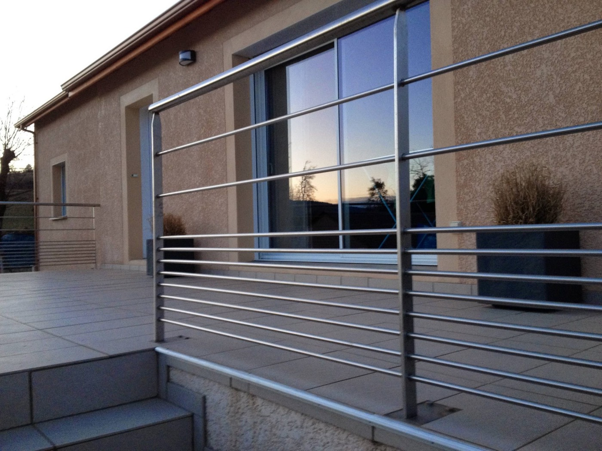
lionnel.balez@gmail.com
Chaudronnerie, ferronnerie et métallerie près de Marvejols et Mende.


Pourquoi cette piste
- C'est le changement le plus faible pour les clients habitués : la marque, le menu et le pied de page restent à leur place.
- Le texte, aujourd'hui caché derrière les animations, devient lisible dès l'arrivée sur la page.
- Les pages de prestations sont étoffées avec les textes que l'accueil contient déjà.
- Sur mobile, une barre Appeler, E-mail et Plan est empruntée à la proposition 3.
- Limite : la piste est peu spectaculaire, et les photos jouent un rôle secondaire.
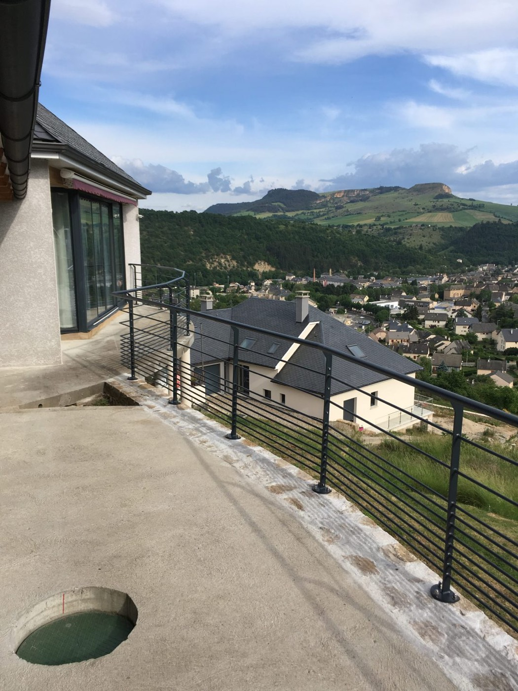
Chaudronnerie inox
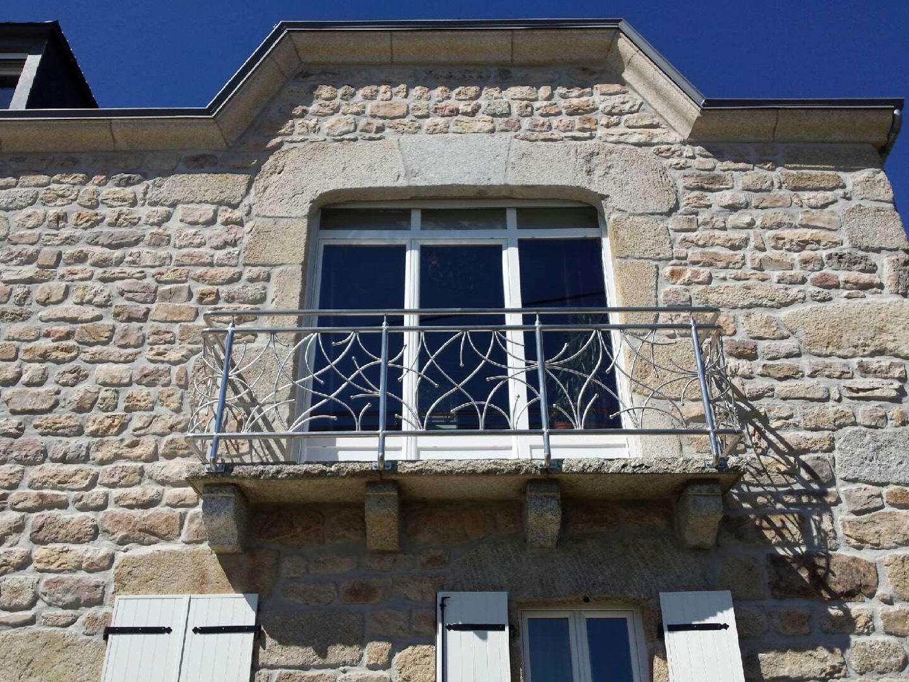
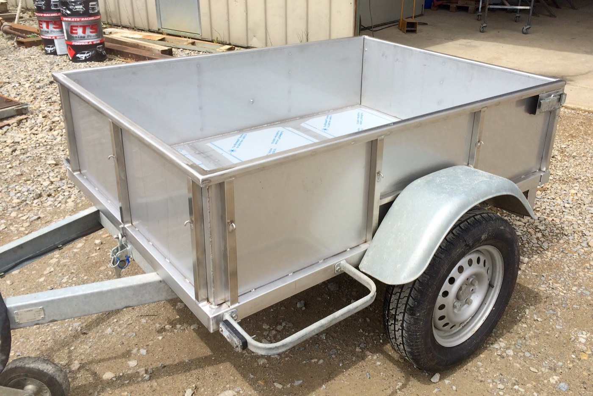
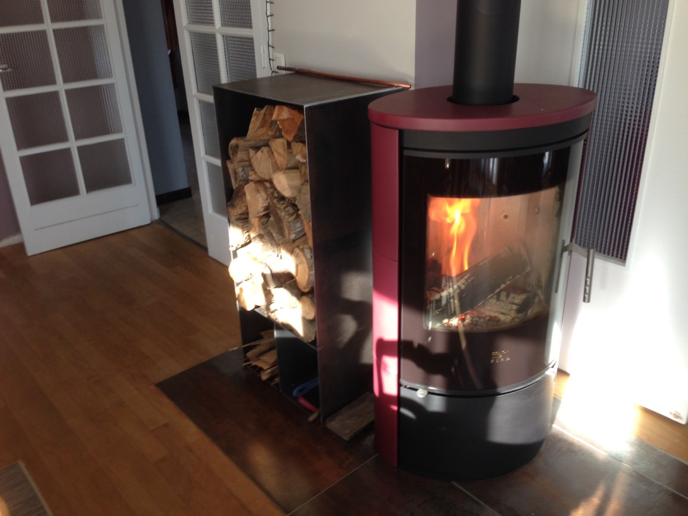
Ferronnerie et chaudronnerie thermolaquées
Peinture en poudre appliquée par effet électrostatique, puis cuite au four.
59 photos →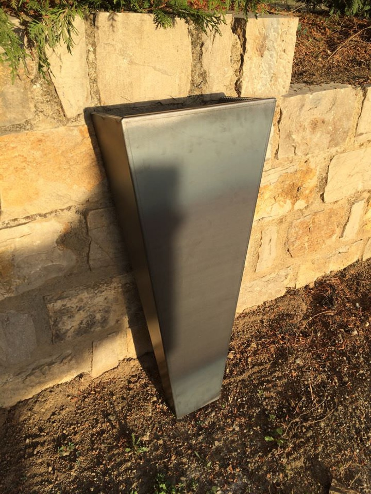
Pourquoi cette piste
- Les 165 photos de réalisations sont le premier atout du site, et cette piste les met en avant.
- Le visiteur juge la qualité des finitions en un coup d'œil.
- Limite : tout repose sur l'accord de l'entreprise et des propriétaires pour diffuser les photos, et sur des images récentes et nettes.
- Limite : le fond sombre s'éloigne des fonds clairs actuels, et la piste est plus lourde à maintenir.
Lundi au vendredi · 8 h 00 – 18 h 30 · lionnel.balez@gmail.com
Chaudronnerie
Alu, inox
Thermolaquage
Peinture en poudre
Ferronnerie inox
Inox, alu, acier
Mobilier
Acier, inox
Pourquoi cette piste
- Le téléphone est le premier moyen de contact mis en avant par le site actuel, et c'est là que cette piste concentre l'effort.
- Les étapes « conseils, devis gratuit, livraison sur site » viennent du texte d'accueil existant.
- Limite : les photos et le savoir-faire passent au second plan, et le site peut paraître moins artisanal.
- Limite : la piste suppose que l'atelier puisse répondre au téléphone sur les horaires affichés.
Utilisées
Le logo d'origine (logo_balez_soudure_002.png) et 22 photos de chantier issues des diaporamas des pages de prestations, redimensionnées à 1400 px maximum.
Écartées
- lionnelbalez.jpg, une image d'étincelles qui est peut-être une illustration.
- IMG_0536 (thermolaquée 59), où un numéro de maison est lisible.
- 20150107_143642828_iOS (thermolaquée 7), qui double l'escalier IMG_0222.
- Les photos où l'on voit une plaque d'immatriculation ou un logo client.
- Le logo de l'agence COM performances et le visuel « Artisan ».
Créés pour la proposition
Les motifs vectoriels (cordon de soudure, étincelles, équerres, rayures) et les maquettes, en HTML et CSS. Il n'y a aucune photo d'illustration, aucun portrait, aucune signature et aucun avis.
| Aperçu | Contenu | Page d'origine | URL d'origine | Statut |
|---|---|---|---|---|
| Logo Lionnel Balez Soudure | Toutes | https://lionnelbalezsoudure.fr/wp-content/uploads/sites/459/2017/10/logo_balez_soudure_002.png | Autorisation à obtenir | |
| Remorque en aluminium | Chaudronnerie | https://lionnelbalezsoudure.fr/wp-content/uploads/sites/459/2017/10/13235324_1551576748478951_3524099144359352395_o.jpg | Autorisation à obtenir | |
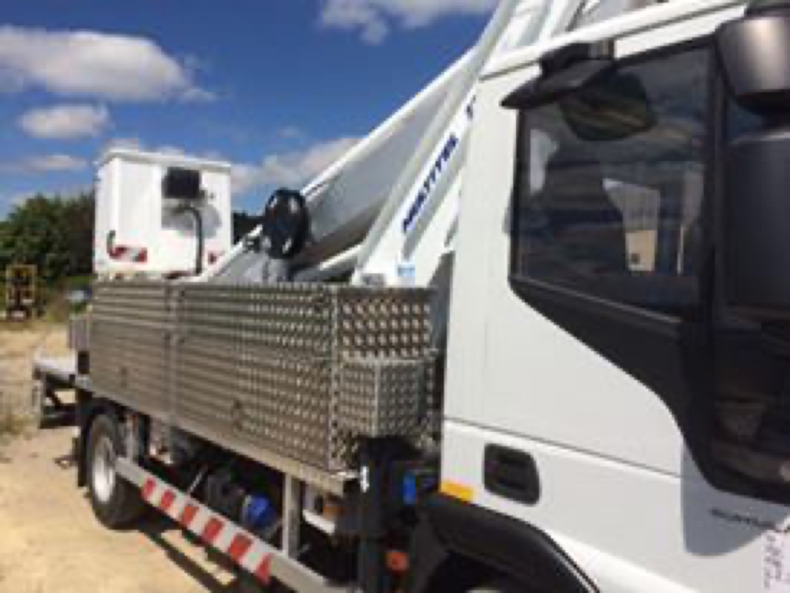 | Camion-grue équipé de coffres en tôle alu larmée | Chaudronnerie | https://lionnelbalezsoudure.fr/wp-content/uploads/sites/459/2017/10/13507073_1566550950314864_1415813101727937425_n.jpg | Autorisation à obtenir |
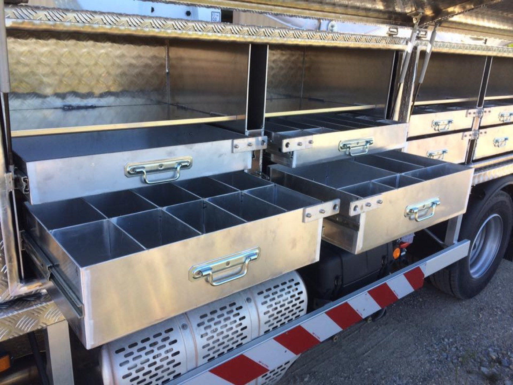 | Aménagement de camion : tiroirs et coffres inox/alu | Chaudronnerie | https://lionnelbalezsoudure.fr/wp-content/uploads/sites/459/2017/10/13516678_1566551053648187_2415523416011231404_n.jpg | Autorisation à obtenir |
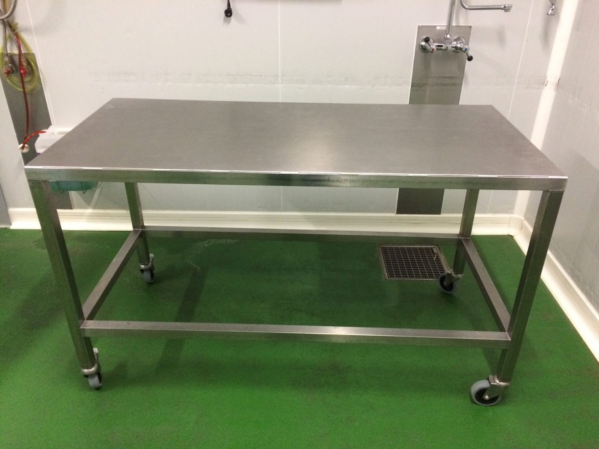 | Table inox sur roulettes | Chaudronnerie | https://lionnelbalezsoudure.fr/wp-content/uploads/sites/459/2017/10/IMG_0291.jpg | Autorisation à obtenir |
| Raccord en té inox à brides | Chaudronnerie | https://lionnelbalezsoudure.fr/wp-content/uploads/sites/459/2017/10/IMG_0351.jpg | Autorisation à obtenir | |
| Équipement inox de cuisine professionnelle | Chaudronnerie | https://lionnelbalezsoudure.fr/wp-content/uploads/sites/459/2017/10/IMG_0439.jpg | Autorisation à obtenir | |
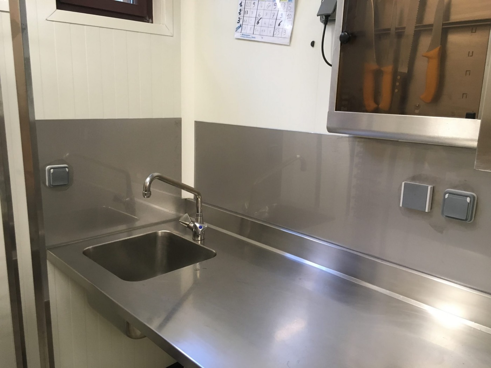 | Plan de travail inox de cuisine professionnelle | Chaudronnerie | https://lionnelbalezsoudure.fr/wp-content/uploads/sites/459/2017/10/IMG_0442.jpg | Autorisation à obtenir |
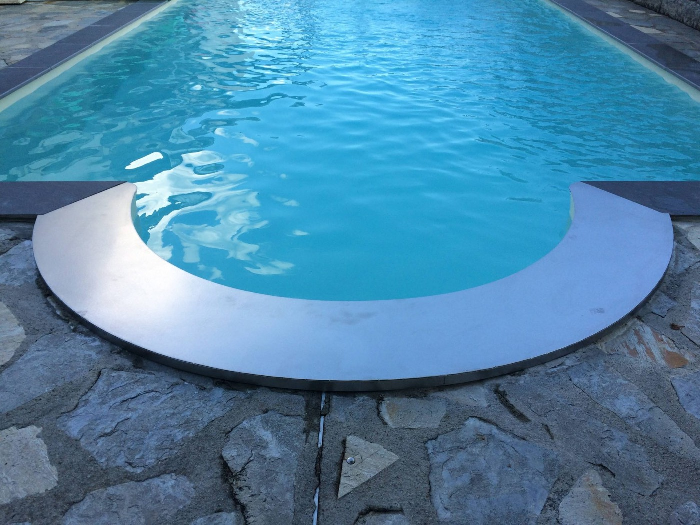 | Margelle de piscine en inox | Chaudronnerie | https://lionnelbalezsoudure.fr/wp-content/uploads/sites/459/2017/10/IMG_0503.jpg | Autorisation à obtenir |
| Portail vert thermolaqué | Thermolaquée | https://lionnelbalezsoudure.fr/wp-content/uploads/sites/459/2017/10/IMG_0031-1.jpg | Autorisation à obtenir | |
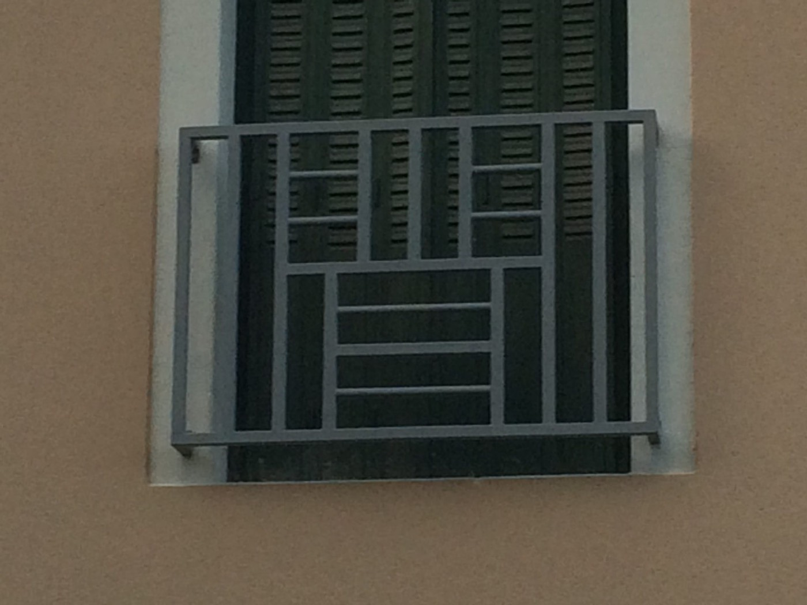 | Grille de défense de fenêtre, gris | Thermolaquée | https://lionnelbalezsoudure.fr/wp-content/uploads/sites/459/2017/10/IMG_0054.jpg | Autorisation à obtenir |
| Passerelle en caillebotis avec garde-corps | Thermolaquée | https://lionnelbalezsoudure.fr/wp-content/uploads/sites/459/2017/10/IMG_0191.jpg | Autorisation à obtenir | |
| Escalier noir à marches en porte-à-faux | Thermolaquée | https://lionnelbalezsoudure.fr/wp-content/uploads/sites/459/2017/10/IMG_0222.jpg | Autorisation à obtenir | |
| Garde-corps avec vue sur la vallée | Thermolaquée | https://lionnelbalezsoudure.fr/wp-content/uploads/sites/459/2017/10/IMG_0465.jpg | Autorisation à obtenir | |
| Garde-corps inox à barreaux sur terrasse | Inox | https://lionnelbalezsoudure.fr/wp-content/uploads/sites/459/2017/10/IMG_0104.jpg | Autorisation à obtenir | |
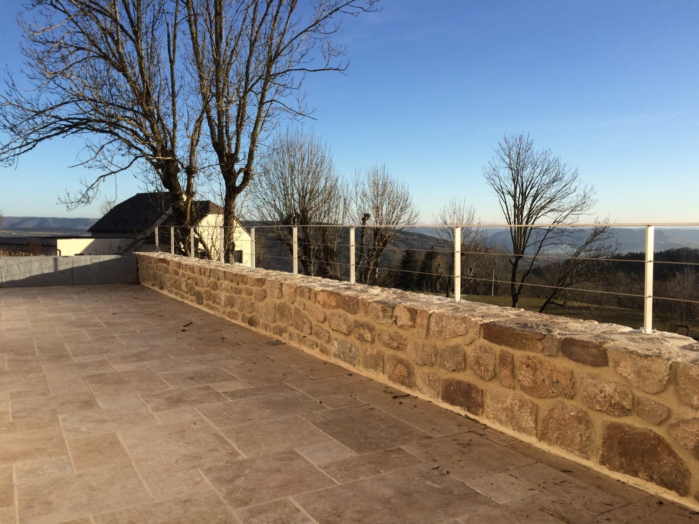 | Garde-corps inox sur muret de terrasse | Inox | https://lionnelbalezsoudure.fr/wp-content/uploads/sites/459/2017/10/IMG_0133.jpg | Autorisation à obtenir |
| Balcon en ferronnerie sur maison en pierre | Inox | https://lionnelbalezsoudure.fr/wp-content/uploads/sites/459/2017/10/IMG_0232.jpg | Autorisation à obtenir | |
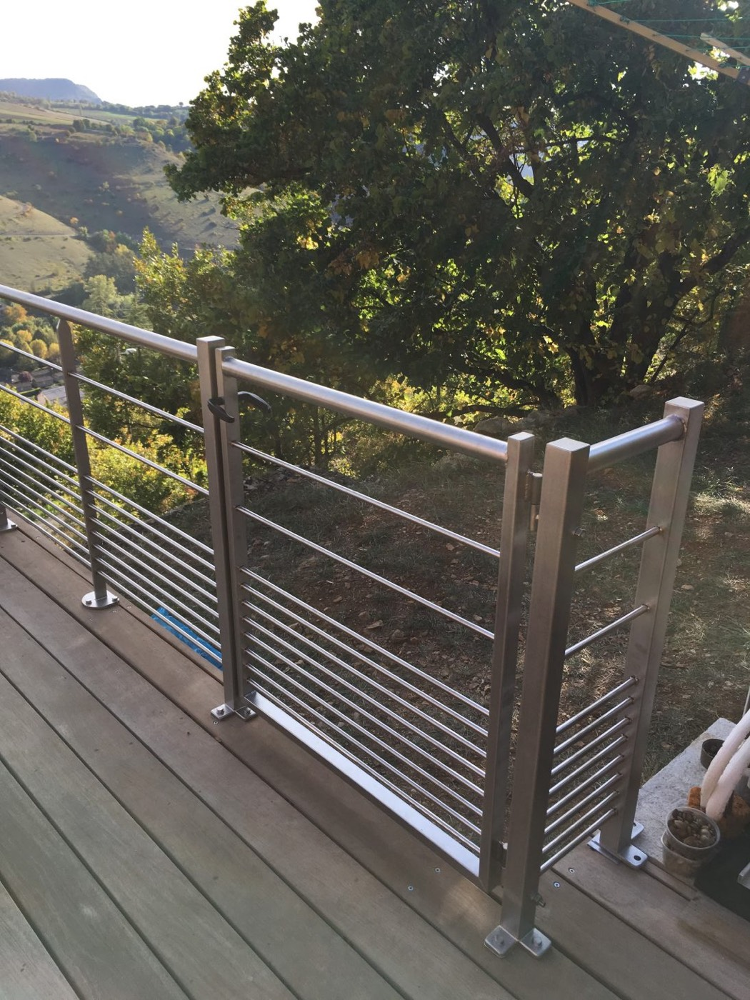 | Garde-corps inox sur terrasse bois | Inox | https://lionnelbalezsoudure.fr/wp-content/uploads/sites/459/2017/10/IMG_0594.jpg | Autorisation à obtenir |
| Garde-corps inox, maison contemporaine | Inox | https://lionnelbalezsoudure.fr/wp-content/uploads/sites/459/2017/10/image.jpg | Autorisation à obtenir | |
| Jardinière en inox | Mobilier | https://lionnelbalezsoudure.fr/wp-content/uploads/sites/459/2017/10/11222344_1493205697649390_3545648808356909300_n.jpg | Autorisation à obtenir | |
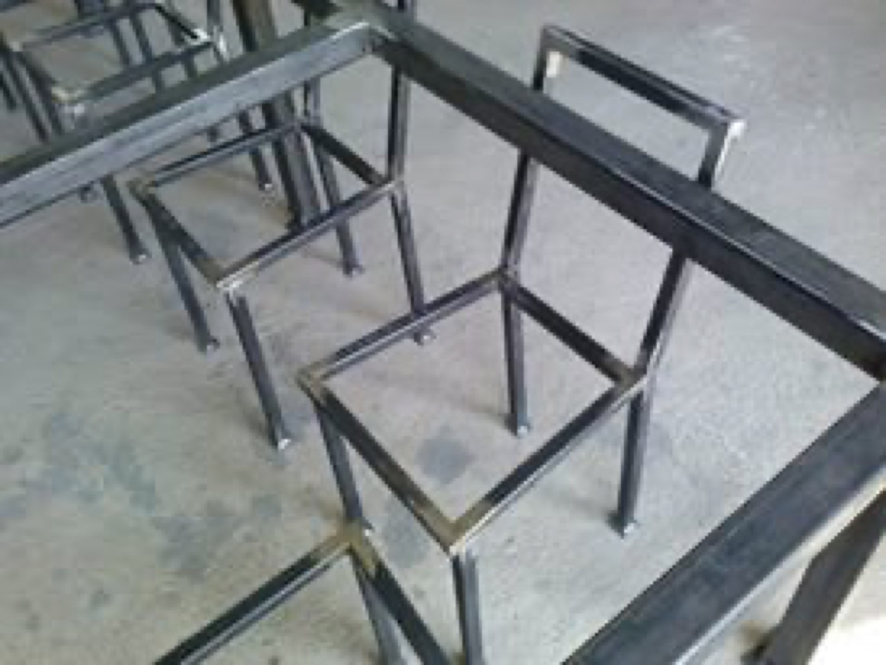 | Structures de chaises | Mobilier | https://lionnelbalezsoudure.fr/wp-content/uploads/sites/459/2017/10/12661864_1518648521771774_1011301348438852111_n.jpg | Autorisation à obtenir |
| Table basse en acier noir | Mobilier | https://lionnelbalezsoudure.fr/wp-content/uploads/sites/459/2017/10/16142680_1647372798899345_8836153586097242174_n.jpg | Autorisation à obtenir | |
| Range-bûches près d'un poêle | Mobilier | https://lionnelbalezsoudure.fr/wp-content/uploads/sites/459/2017/10/886994_1503163339986959_1328814959907547814_o.jpg | Autorisation à obtenir |